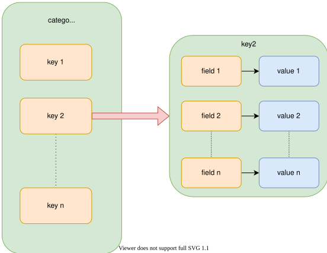
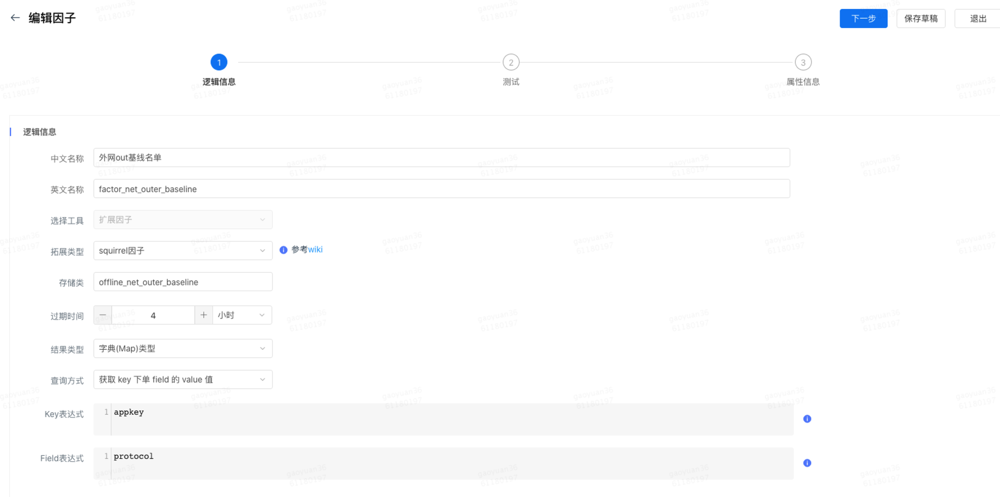
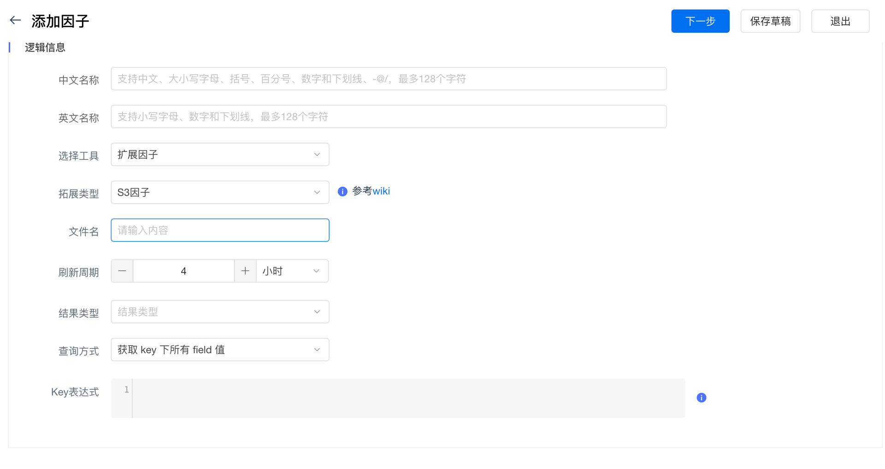
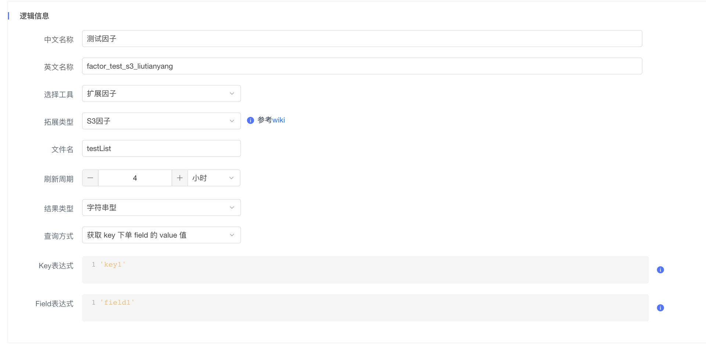

说明：Squirrel因子/S3因子
一、名词解释
Squirrel因子：因子值存储在squirrel中，查询时首先尝试从本地缓存查询因子值，本地缓存中查询不到会去squirrel中查询因子值。如果在squirrel中查询到值，会把值写入本地缓存中，并在一定时间后过期。
S3因子：因子值存储在s3中，应用启动时会首先从s3拉取全量缓存，每次查询时都从本地缓存查询。每隔一段时间会重新从s3上更新数据到本地缓存。
二、数据结构
squirrel因子的数据结构类似于squirrel中的hash的数据结构，有category、key、field、value四个维度：
category是一组key的集合，一般隶属于同一个业务的key在同一个category中
每一个key可能会包含很多组field->value键值对
具体的存储结构如下：

s3因子理论上可以支持除了hash以外更多的数据结构，比如字符串，队列，集合等等，但是需要进一步开发。
三、操作说明
|
说明 |
页面 |
|---|---|
|
入口：策略部署-因子-扩展因子-squirrel因子/s3因子 说明：
|
  |
三 s3因子使用示例
由第二部分可知，用户在s3上保存的原始名单应该是一个两层map，以下面的json为示例：
{
"key1": {
"fiel1": "key1value1",
"field2": "key1value2"
},
"key2": {
"fiel1": "key2value1",
"field2": "key2value2",
"field3": "key2value3"
}
}用户将此json上传到指定s3 bucket上，命名为"testList"
s3 因子配置:

因子类型选择s3因子
文件名填写s3的文件名：testList
刷新时间填入要求多久重新拉一次s3上的文件到缓存
结果类型，与s3文件的value的类型一致，在testList中，value的值类型是字符串型（比如'key1field1'）
查询方式这里示例最简单的获取key下field的value值
key表达式这里写了常量'key1'，也支持使用aviator表达式
field表达式这里写了常量'field1'，也支持使用aviator表达式
这个例子里由于key和field都是常量，因此因子值也是常量'key1field1'。